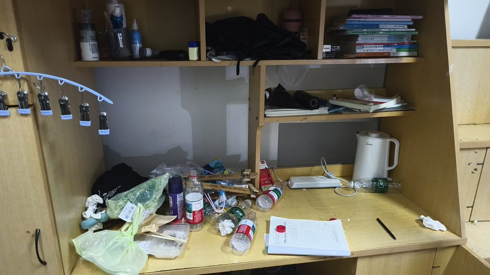
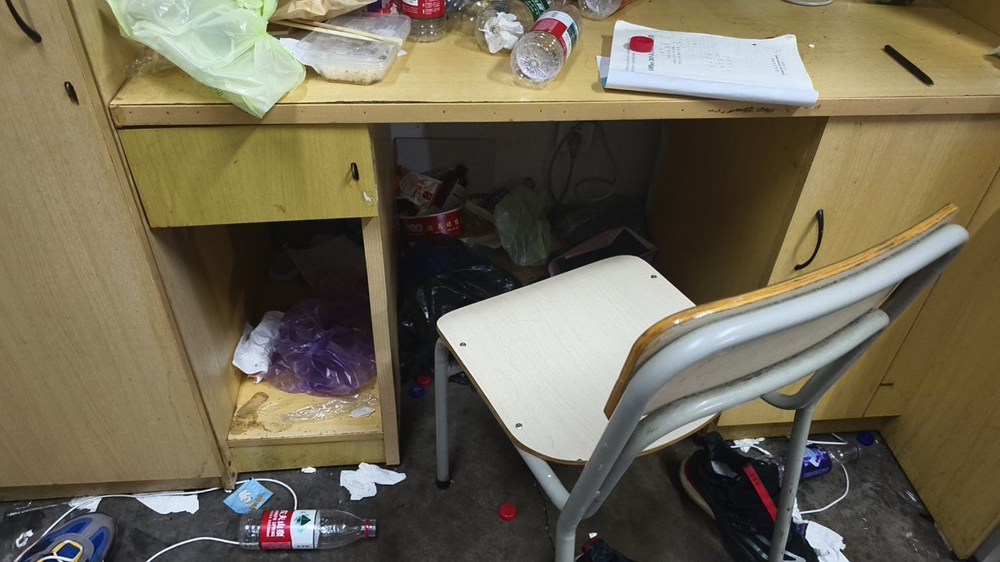

我搬到这个宿舍住了一周就放假了，然后大二火速租房子出去住了，这特么太神了，我搬进宿舍那天发现二三图片里面，有他妈蟑螂窝，我当时心态都快炸了，怎么会有一个猪成这个样子活了18年，而且这哥们这些垃圾摆在这摆了将近一个月，我特么要吐了



突然想起来原来拍过大学舍友的照片😅我们这个专业大二有一次分流，很不幸的是我分流后的舍友是三头😅第一个照片这哥们晚上不睡觉白天搞闹钟不起，这个是最扫码的，二三是不会打扫卫生加不会系鞋带哥，听说没上大学前啥都不会干全让他妈养着，最后一个没拍是因为那家伙头发已经粘到一起了，给我看吐了 https://t.co/rBaDf8AYl9